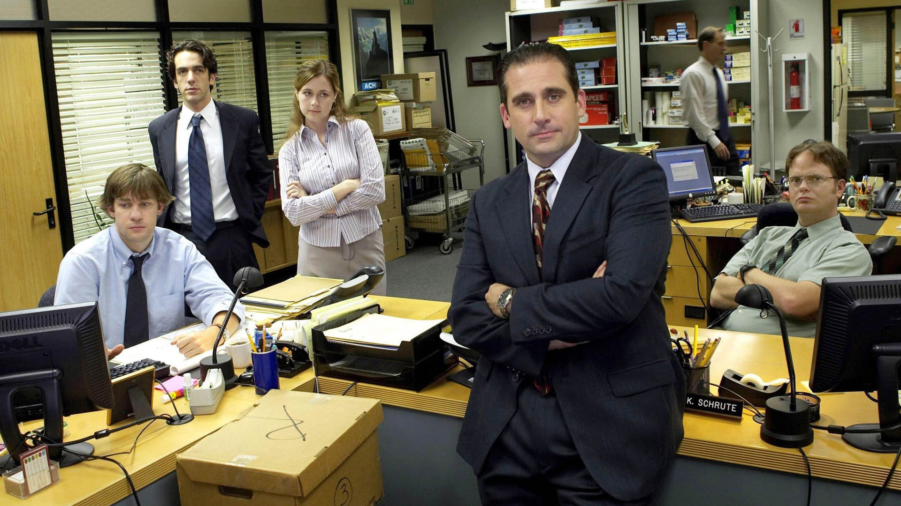
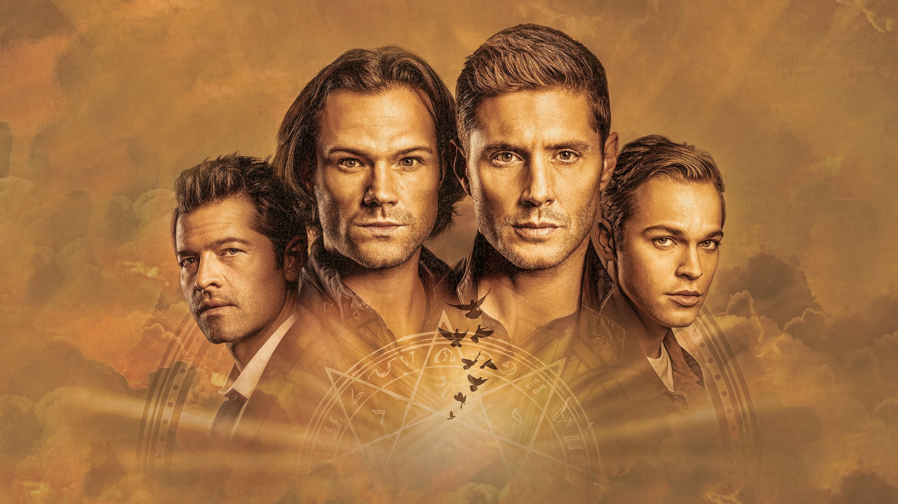

wherecaniwatch.com
We are a site that offers
Where you can watch your tv shows

The Office
The Office is an American mockumentary sitcom television series that depicts the everyday work lives of office employees at the Scranton, Pennsylvania, branch of the fictional Dunder Mifflin Paper Company.

Supernatural
Supernatural follows 2 brothers, Sam and Dean Winchester, as they cross the country hunting supernatural beings with the help of their Angel friend Castiel and the King of Hell Crowley along with some other hunters they meet along the way.